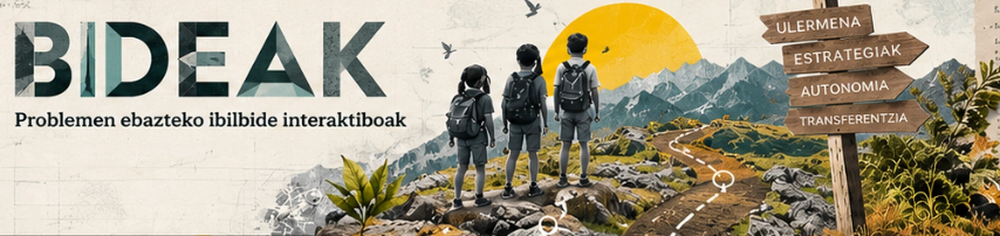

BIDEAK · Problemak ebazteko ibilbide interaktiboak

LH5 · LH6 · DBH1 · DBH2
12 ibilbide, lau mailatan
LH5etik DBH2ra, eskakizun matematikoa mailaz maila egokituta.
12 ibilbide4 maila bakoitzean1 demo erabilgarri11 garatzeko aurreikusita
Problemen ebazpenerako txantiloietatik abiatuta. Problemenebazpena.eus lantaldearen lau txantiloiak dira lan-koadernoaren oinarria: ulermena, arrazoiketa, autonomia eta egoera problematizatuak. BIDEAKek 12 testuinguru berritan garatuko ditu, jarduera interaktiboekin eta irizpideei lotutako ebidentziekin.
Lehen ibilbidea
Eskolako ortua
Lurra, ura eta aurrekontua.
Datu didaktikoak.